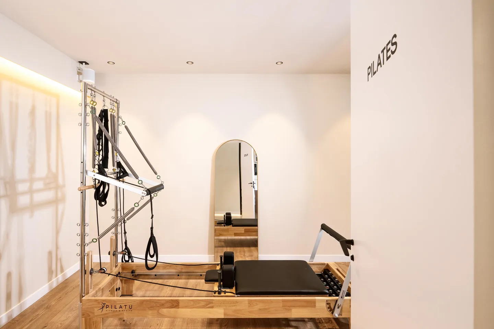
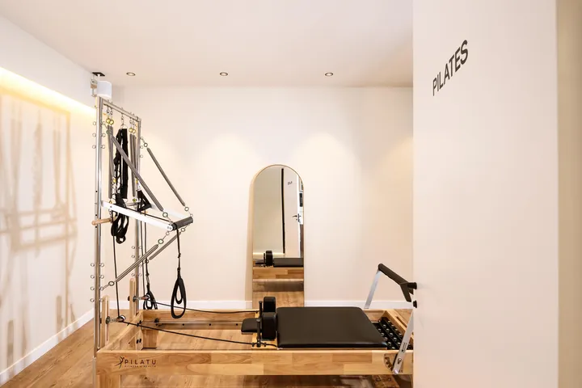
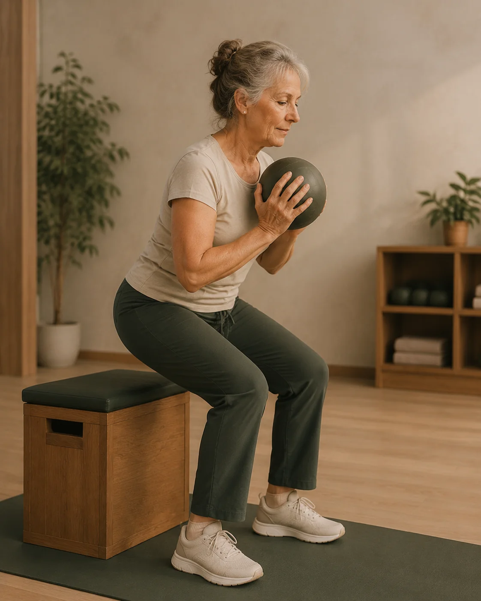
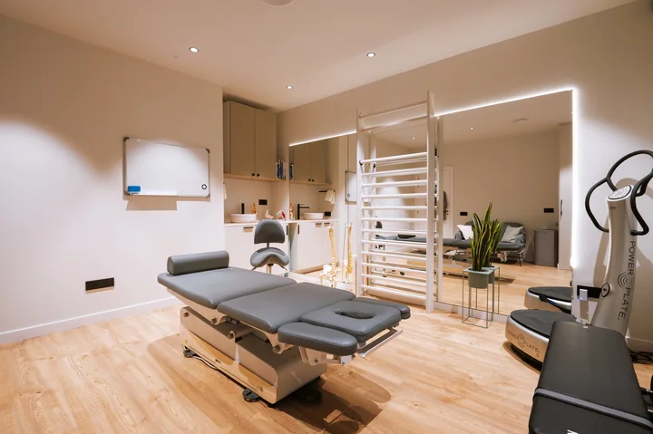
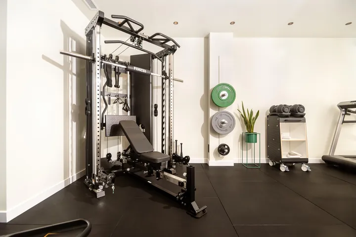

01 · ESPACIO CLÍNICO
Fisioterapia
Cabina privada y serena para valorar, entender el origen del síntoma y aplicar tratamiento manual.
EL CENTRO
Dos espacios conectados para acompañar diferentes momentos de un mismo proceso: valorar, tratar, moverse y seguir avanzando.
Cabina privada y serena para valorar, entender el origen del síntoma y aplicar tratamiento manual.

Espacio de readaptación con máquinas de Pilates Reformer y zona de fuerza guiada.
UN MISMO ENFOQUE
El camino hacia una recuperación sólida no es lineal ni cabe en una sola sala. Hay momentos que requieren silencio, escucha clínica atenta y terapia manual precisa sobre camilla.
Y hay momentos en los que el paso determinante es ponerse de pie: reactivar la musculatura, recuperar confianza en el movimiento con el Pilates Reformer y consolidar la fuerza para que el dolor no reaparezca.
Por eso Physio Wellness cuenta con dos espacios contiguos en Sitges. No son dos proyectos distintos: son dos ambientes creados para que tu evolución transcurra de forma natural, coordinada y bajo el mismo criterio profesional.
RECORRIDO INTERACTIVO
Selecciona una disciplina para ver el entorno donde se desarrolla y sus características principales.
Una cabina privada y silenciosa, concebida para la escucha clínica sin distracciones. Aquí dispones de tiempo exclusivo para exponer tu caso, explorar el origen real de la molestia y recibir terapia manual avanzada en camilla articulada con luz graduada.
Evaluación exhaustiva de movilidad, dolor y antecedentes biomecánicos sin prisas.
Movilización articular, técnicas miofasciales y alivio neuromuscular en camilla hidráulica.
Control y reevaluación periódica de la respuesta de tus tejidos para modular el tratamiento.
Una hora completa dedicada exclusivamente a ti con tu fisioterapeuta de referencia.


Un estudio diáfano, luminoso y activo, contiguo a la sala de fisioterapia. Equipado con reformers de Pilates con torre y área de entrenamiento de fuerza funcional. Aquí desmitificamos el miedo al movimiento para que pases del alivio pasivo de la camilla a la capacidad real, guiado en todo momento por profesionales.
Alineación postural, descompresión articular y control central asistido por sistema de muelles.
Rack multipower Force USA, banco regulable y sobrecarga progresiva adaptada a tu umbral.
Aprendizaje de patrones motores seguros bajo supervisión constante para perder el miedo a moverte.
El eslabón indispensable para consolidar el alivio de la camilla y ganar autonomía física duradera.


Dos salas contiguas con un mismo criterio clínico: el paso natural de la camilla al ejercicio guiado.
CONTINUIDAD Y COMUNICACIÓN
Los dos espacios están físicamente uno al lado del otro. El fisioterapeuta y el readaptador comparten el mismo historial y criterio para que tu transición sea fluida y sin saltos.
* Una secuencia orientativa adaptada a cada persona: según tu motivo de consulta, tu punto de inicio puede estar en camilla o directamente en movimiento activo.
VIDA Y PERSONAS
La arquitectura y el equipamiento cobran su auténtico sentido cuando las personas interactúan con ellos: momentos de atención cercana, esfuerzo guiado y acompañamiento profesional.



ESPACIOS Y EQUIPAMIENTO
Sin artificios ni sobrecargas: espacios concebidos con materiales nobles, iluminación pensada y ventilación natural.
Cabina privada de fisioterapia equipada con camilla hidráulica articulada de alta gama, espaldera de madera, luz graduada y aislamiento acústico para garantizar una consulta tranquila, sin interrupciones.

Sala diáfana con suelo de impacto, rack multipower Force USA, banco regulable, barras olímpicas y mancuernas para readaptación motora, rehabilitación funcional y acondicionamiento neuromuscular.

Estudio específico de Pilates equipado con máquinas Reformer con torre Pilatu construidas en madera noble, diseñadas para brindar una respuesta mecánica suave, adaptable y de máxima precisión articular.
Espacio de recepción con amplios ventanales a la calle, sillones de terciopelo verde oliva y mesa de mármol; un entorno acogedor pensado para que tu llegada y tu salida sean sin prisas.

DÓNDE ESTAMOS
Nuestros dos espacios contiguos están situados en una zona accesible y tranquila de Sitges, con facilidad de llegada tanto a pie como en transporte.
CONÓCENOS
El centro físico es el escenario. El equipo y tu primera sesión le dan vida.
Fisioterapeutas, readaptadores e instructores comprometidos con una atención honesta, cercana e individualizada.
EquipoTe explicamos cómo es tu primera consulta: 60 minutos de valoración minuciosa para entender tu caso antes de decidir el tratamiento.
Primera visitaReserva tu cita presencial en Sitges o consúltanos cualquier duda sin ningún compromiso.